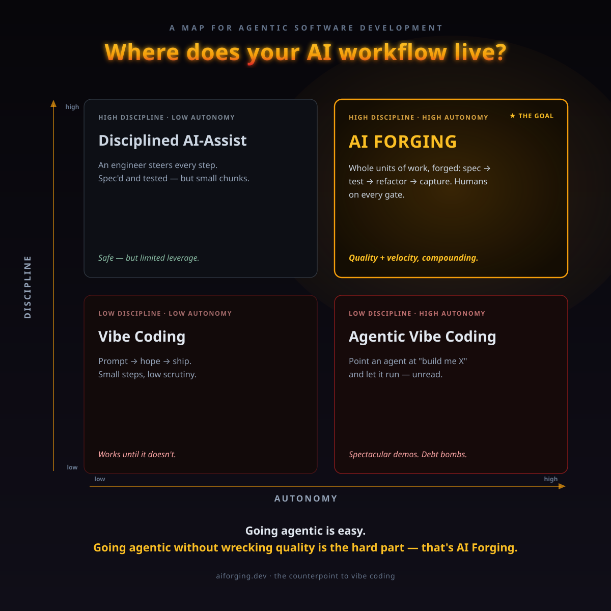

What if your codebase is getting worse with every feature you ship? Going agentic is easy — going agentic without wrecking quality is the hard part. AI Forging is the discipline for handing AI whole units of work while quality and velocity compound instead of collapse.
Autonomy and discipline are two different axes. "Agentic" means you hand the AI a whole unit of work. "Vibe" means little discipline wraps it. Cross them and you get four very different places to live — including the trap almost nobody names: agentic vibe coding.

Click the map to open it full-size ↗
It isn't a single tool. It's a philosophy, a methodology that serves it, and a concrete implementation of that methodology — three layers with very different lifecycles.
What goes wrong when we build with agentic AI, and why quality has to compound instead of decay. Tool-agnostic and the part that endures longest.
Spec → plan → test-first execution → refactoring in isolated sub-agents → knowledge captured so it scales. Framed as one approach, not the only one — others are welcome.
The open-source Claude Code plugin — with strong, opinionated bets on architecture. One implementation of the methodology. You could disagree with every opinion and still hold the philosophy.
AI makes producing code nearly free. Without structure, every feature shipped makes the codebase worse — and eventually the AI itself starts hallucinating against the mess it helped create. This is the problem worth solving, and it outlives any single tool.
AI output silently diverges from your conventions. Small drift today becomes structural debt in six months — hidden behind a green CI badge.
Features ship fast while the codebase rots underneath. The rework cycle begins invisibly, then velocity collapses.
Hard-won decisions live in chat transcripts and individuals' heads. Nothing is codified. Turnover resets the clock.
No record of what was built, why, or by whose approval. Governance and regulatory blind spots.
A metallurgy metaphor: raw material becomes stronger through structured transformation — not by hoping for the best. Each pass through the forge leaves the codebase stronger than it started.
AI-powered TDD. Tests capture intent before a line of implementation exists — the double-entry accounting of software.
Intent, verified — not eyeballed.
After the tests pass, one fresh-context sub-agent per pattern reworks just the changed code — in parallel, no drift, no fatigue.
Consistency without human fatigue.
One correction, one pattern file. Adding the 50th costs no more than the 5th. No monolith, no context ceiling.
The system gets smarter, not heavier.
The forge builds the feature. Two further stages check it — one reads the running product, one reads the diff. Both are optional, and neither writes a feature.
Every feature with a screen carries a QA checklist. The AI walks it in a real browser, marks the items only a person can judge so you work those in parallel, and records one line of evidence per step.
It never fixes what it finds. A failing step means the product and the spec disagree — it says nothing about which one is wrong, and an auto-fixer would cement the wrong answer and hand you a green checklist saying so.
Findings become conversations, not commits.
Rounds of code review across every repo the feature touched — but every finding is verified against the source before it's accepted. About a third of review findings describe behavior that was deliberate.
It stops on a real condition, not a finding count: counts settle into a noisy floor and severity can rise after falling for five rounds. Both were tried. Both misled.
Rounds that converge instead of circling.
And then it stops and hands you the full test suite. Every automated run — Fire, Hammer, every fix agent — is scoped to the one suite that feature owns, because a three-second loop and a three-minute loop are not the same activity at different speeds. That trades a real risk: a regression in a different feature won't show up. So no stage here ever runs the whole suite, and every one of them ends by telling you, in words, that it's your turn.
Every feature's spec, plan, QA checklist and review record lives in a forge workspace — a git repository your whole team clones. That single decision is what turns a personal AI workflow into a team one.
They're three work items in and gone for a week. A teammate opens the same feature folder and gets what's done, what's next, what was deliberately deferred, and every finding still open.
No handover meeting. No archaeology.
Point it at the feature folder. It reads the specs — the business intent and the engineering intent, written down at the time by the people who decided them.
It doesn't have to guess. That distinction gets bigger every month.
Your sharpest reviewer catches the AI doing something less than ideal and captures it as a pattern file — one correction, one file.
Every engineer's next feature is checked against it. Expertise stops being trapped in the pull request where it happened.
"The code for this lives roughly in these folders. It currently does A, B and C. Now I'd like it to do X."
That's the usual way to reopen an old feature, and it asks the AI to reconstruct why from what. It's tedious, it's error-prone, and the blind spots it produces are large and quiet — you don't find out what it misunderstood until the change ships.
A feature folder hands it the reasoning directly. That's the difference between an AI that understands your feature and one that has inferred a plausible story about it.
Three commands carry it: one to start a feature, one to pick up any feature — yours or a teammate's — and one that wires a freshly cloned workspace to a new engineer's machine.
/aiforging:forgestart something new
/aiforging:resumepick up anything
/aiforging:joinonboard a teammate
Nothing autonomous, nothing silent. Every proposal passes a human gate before it merges — reviewed at feature completion, not one step at a time.
The most important layer is the Why, and it belongs to everyone. The methodology below it is one route through the problem — yours might be better. The plugin is one implementation — there could be others, for other tools, stacks, and architectures. Take the ideas, build your own, and share what you learn.
A Claude Code plugin that runs the whole method — spec, TDD, pattern-driven refactoring, knowledge capture, and the two optional verification stages — with opinionated, domain-driven architecture on top. Built for established codebases that already feel the AI-generated sprawl. Prescriptive on purpose.
# Install superpowers (the TDD + sub-agent foundation) /plugin marketplace add obra/superpowers /plugin install superpowers@superpowers-dev # Install AI Forging /plugin marketplace add aiforging/aiforging /plugin install aiforging@aiforging # Then bootstrap a workspace /aiforging:setup # Start a feature /aiforging:forge my-feature "what I want to build" # Optional, once it's built /aiforging:browser-testing /aiforging:review-loop
Symfony / PHP / Doctrine is the happy path today; other stacks work to the degree the conventions apply. Try it on something real and open an issue about what broke.
Every new idea meets skepticism. Here are the objections we hear most — and the answers, backed by a working system.
/aiforging:setup to bootstrap a workspace. It's at v0.4.0, MIT licensed, and running against real production codebases — and the principles apply even if you never install a thing./aiforging:resume. When a reviewer catches the AI doing something less than ideal, they capture it as a pattern file and every engineer's next feature is checked against it. It works solo too — it just works for one person, and the specs stop being useful the week that person is out.